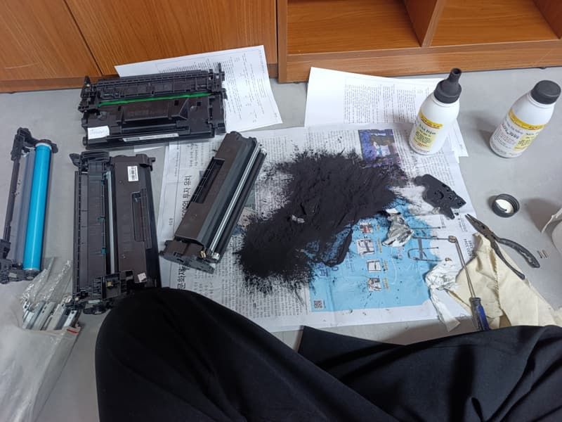
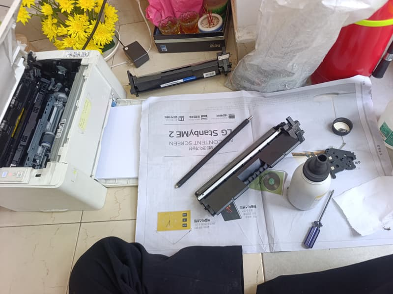
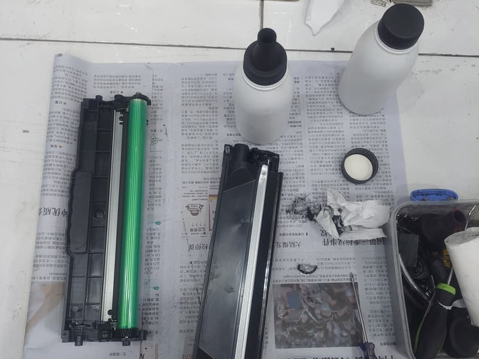
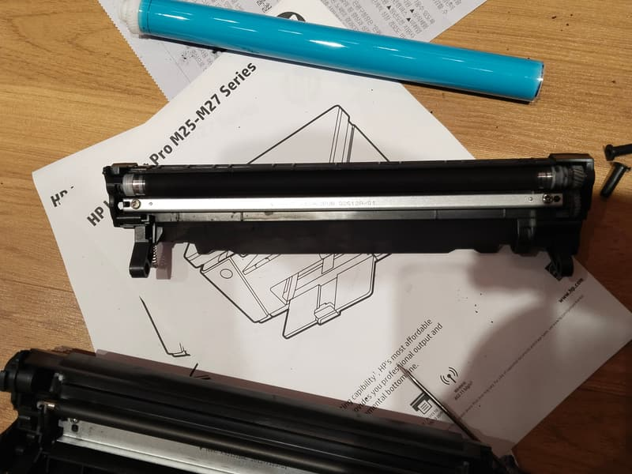

Nạp mực máy in tận nơi — làm đúng 7 bước, không chỉ là châm mực vào hộp
Nạp mực làm nhanh thì 5 phút cũng xong. Nhưng làm đủ bước thì máy in bền hơn và bản in sạch hơn — đây là bảy bước kỹ thuật của chúng tôi làm tại nhà anh/chị.
Vì sao nạp mực nhanh lại làm hỏng máy
Hộp mực laser có hai khoang: khoang mực mới và khoang mực thải. Mỗi lần in, phần mực không bám hết lên giấy bị gạt về khoang thải. Nạp mực đúng cách là phải mở hộp, hút sạch khoang thải rồi mới châm mực mới vào khoang kia.
Nạp nhanh kiểu "khoan lỗ châm mực" bỏ qua bước này. Khoang thải đầy dần, mực cũ trộn với mực mới và tràn ra — đó là lý do bản in bị lem dù mực mới. Nặng hơn, mực thải tràn ra bám lên trống làm trống xước, và lúc đó phải thay trống chứ không nạp thêm được nữa.
Chênh lệch giữa hai cách làm là khoảng mười phút công. Nhưng một cái giữ được vỏ hộp nạp 4–5 lần, một cái làm hỏng hộp sau 2 lần.

Bảy bước kỹ thuật làm tại chỗ
- Xem máy và hộp mực trước, chốt giá. Nếu trống hay trục đã tới hạn, báo giá linh kiện và chờ anh/chị đồng ý.
- Tháo hộp mực, trải tấm lót. Bụi mực rất mịn nên phải che chỗ làm việc trước khi mở.
- Mở hộp, hút sạch khoang mực thải bằng máy hút chuyên dụng — không thổi, vì thổi làm bụi mực bay khắp phòng.
- Vệ sinh trống, trục từ, trục sạc và gạt mực. Kiểm tra bề mặt trống xem có xước hay mòn cục bộ.
- Châm mực mới đúng loại cho hãng máy đó. Mực Brother mịn hơn mực HP — dùng lẫn là bản in mờ.
- Reset hoặc thay chip nếu máy khoá (HP đời mới, Samsung, Fuji Xerox), lắp lại hộp và đóng máy.
- In thử 5–10 trang trước mặt anh/chị: kiểm độ đậm, lem mực, sọc, kẹt giấy. Ghi phiếu bảo hành theo số trang.

Nạp mực tại nhà hay phải mang máy đi
Làm tại nhà, tại chỗ. Nạp mực chỉ cần tháo hộp mực ra khỏi máy — không tháo máy, không mang máy đi đâu. Toàn bộ mất khoảng 15–20 phút cho máy laser A4.
Chỉ ba trường hợp phải mang máy về xưởng: lỗi bo mạch, lô sấy phải thay cả cụm, hoặc máy bị rơi gãy khung. Cả ba đều được báo trước chi phí và thời gian, và anh/chị quyết định có làm hay không.

Máy phun mực hệ bình: việc khác hẳn
Epson L3110, L3210, L3250, L1210 và Canon dòng G không dùng mực bột mà dùng mực nước đổ vào bình. Với các máy này, "nạp mực" là bơm mực nước — 150.000 – 200.000đ cho 4 màu, gồm kiểm tra đầu phun.
Lỗi thường gặp ở nhóm này không phải hết mực mà là nghẹt đầu phun do để lâu không in: bản in sọc ngang hoặc thiếu màu dù bình vẫn đầy. Việc cần làm là thông đầu phun, không phải bơm thêm mực. Có máy còn khoá vì bộ đếm mực thải đã tràn, phải reset mới in được.
Vì vậy khi gọi, anh/chị nói rõ model máy. Nghe "Epson" thôi thì chưa biết là laser hay hệ bình, và hai loại mang vật tư khác nhau.

Giá nạp mực theo từng hãng máy
Bảng giá công khai theo mã hộp mực, đã gồm công đi lại và vệ sinh buồng mực.
Anh/chị ở quận nào?
Mỗi khu có khung thời gian tới khác nhau — xem trang khu vực của mình để biết trước.
Câu hỏi thường gặp
Nạp mực máy in tận nơi mất bao lâu?
Với Quận 8, Quận 4, Quận 5 và Quận 6 — kho đặt ở Phạm Hùng nên kỹ thuật thường có mặt trong 20–40 phút. Quận 7, Bình Chánh, Nhà Bè xa hơn, khoảng 45–60 phút tuỳ giờ. Thao tác nạp mực và vệ sinh buồng mực mất thêm 15–20 phút.
Giá nạp mực máy in bao nhiêu?
Hộp mực laser A4 của HP và Canon là 80.000 – 100.000đ, đã gồm công đi lại và vệ sinh buồng mực. Brother, Samsung, Fuji Xerox 120.000đ. Panasonic 140.000đ. Máy A3 từ 250.000đ. Máy phun mực hệ bình Epson L-series 150.000 – 200.000đ. Toàn bộ xem ở trang bảng giá.
Nạp mực, đổ mực, bơm mực, thay mực khác nhau không?
Với khách thì là cùng một việc: cho mực mới vào hộp mực đang dùng. Chỉ "thay hộp mực" mới khác — là bỏ hộp cũ lắp hộp mới nguyên bộ, đắt hơn nhưng cần thiết khi vỏ hộp đã nạp quá nhiều lần. Kỹ thuật xem hộp rồi nói rõ nên nạp hay nên thay.
Nạp mực có làm hỏng máy in không?
Không, nếu làm đúng cách. Rủi ro thật nằm ở nạp sai loại mực hoặc không hút hết mực thải — khiến bản in lem và trống nhanh xước. Chúng tôi hút sạch mực thải, vệ sinh trống – trục – gạt rồi mới nạp, và in thử trước khi rời đi.
Bảo hành như thế nào?
Bảo hành theo số trang in thực tế, ghi trên phiếu. Nếu trong thời gian đó bản in mờ, lem hay sọc do lỗi mực, chúng tôi quay lại xử lý miễn phí — kể cả phải đổi hộp mực khác.
Đặt nạp mực tận nơi
Đọc dòng máy và địa chỉ, chúng tôi báo khung giá ngay trong cuộc gọi.